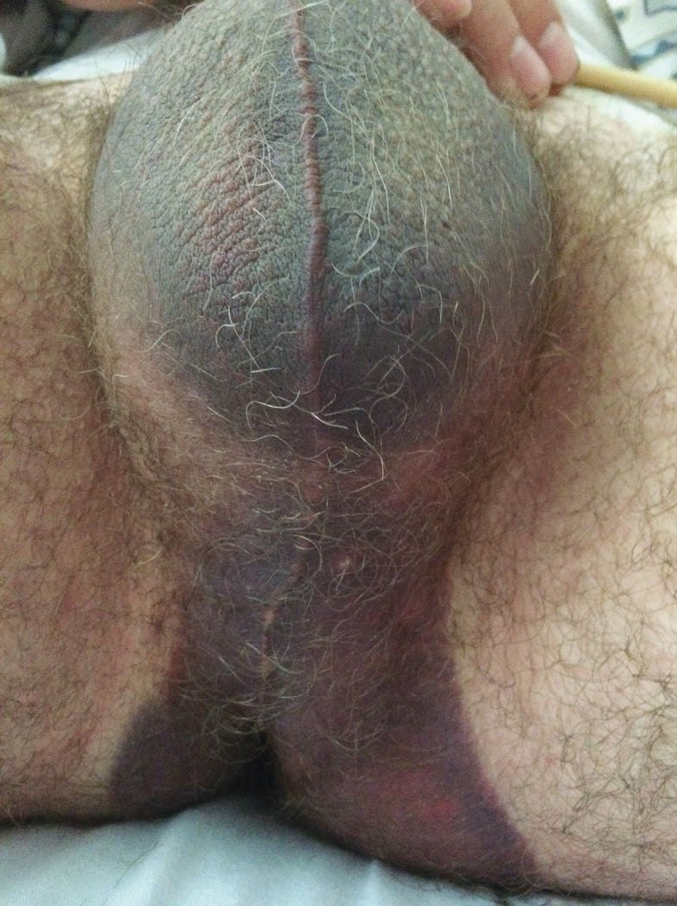
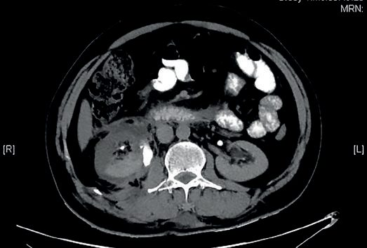
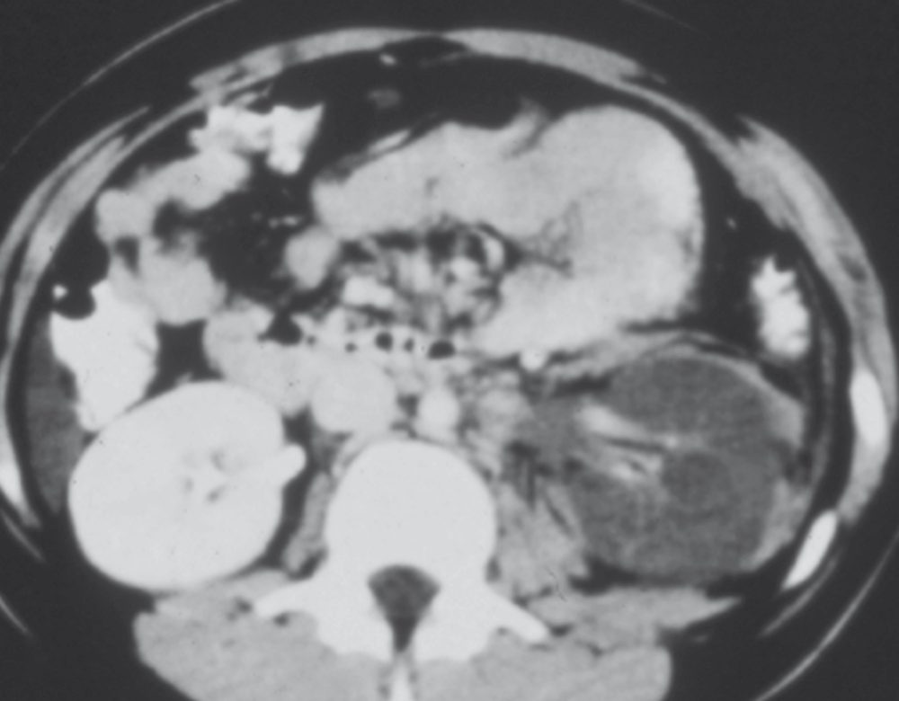
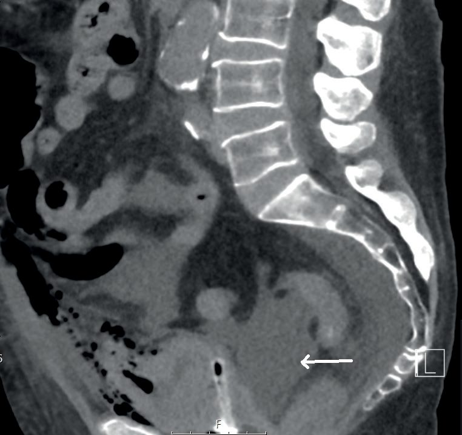
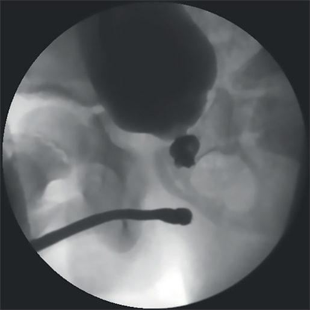

Urological Trauma
Summary
Urological injury is usually found rather than looked for: renal trauma is usually part of polytrauma and is present in only 5% of all trauma cases [1]. The organising principle is that haematuria points to the kidney and bladder but not to the ureter, and that the single most important thing not to do is pass a urethral catheter in a patient with blood at the meatus. Ninety-five per cent of renal injuries are treated non-operatively [2], while ureteric injuries are mostly iatrogenic and mostly recognised late.
Definition
Bladder trauma is classified as iatrogenic or non-iatrogenic, the latter blunt or penetrating [3].
The anatomical division of bladder injury governs the treatment. Extraperitoneal injury leaves the peritoneum intact, with urine extravasating into the retropubic space but not the peritoneal cavity; intraperitoneal injury breaches the peritoneum over the bladder, so urine extravasates into the peritoneal cavity; mixed injuries occur [3]. Intraperitoneal ruptures carry a risk of urinary peritonitis and ileus and are therefore more significant than extraperitoneal ruptures [3].
Pathophysiology
- The kidneys are protected but tethered.
- They are retroperitoneal, relatively fixed by their vascular pedicles, and well protected by perinephric fat, strong posterior abdominal wall muscles and the lower rib cage [1]. Sudden rapid deceleration can cause avulsion injury to the ureters at the pelviureteric junction or to the renal pedicle, the fixity that protects is also what tears [1].
- Penetrating injuries cause direct tissue disruption and are usually associated with adjacent organ injuries [1].
Two anatomical facts change the operation. The left renal vein can be ligated near the inferior vena cava because it has adrenal and gonadal vein collaterals; the right renal vein does not have these [2]. And the renal hilar structures run vein, artery, pelvis from anterior to posterior, VAP [2].
The ureteric blood supply switches sides: it is medial in the upper two-thirds of the ureter and lateral in the lower third [2].
In pelvic fracture urethral injury the mechanism is crush and displacement. The site is usually the bulbomembranous junction, where the bladder with the prostate and membranous urethra is disrupted from the bulbar urethra, with displacement both posterior and superior; the injury may be partial or complete [4]. Bulbar urethral trauma is different in mechanism: a falling-astride injury crushes the bulbar urethra upwards onto the pubic bone [4].
Clinical features
Haematuria (gross or microscopic) is pathognomonic of renal trauma, but its absence does not exclude serious injury, and the severity of injury does not correlate with the degree of haematuria [1]. The ABSITE Review puts the same point positively: haematuria is the best indicator of renal trauma, and also the best indicator of bladder trauma [2].
Lower rib fractures, with or without vertebral fractures, plus abdominal pain with flank contusion should raise suspicion of renal injury and prompt further evaluation [1].
Blood at the meatus, or a scrotal or sacral haematoma, means suspect bladder or urethral injury [2]. For urethral trauma the best signs are haematuria or blood at the meatus, a free-floating high-riding prostate, and scrotal or perineal haematoma [2].
Ruptured bulbar urethra has a characteristic sign: perineal bruising and haematoma, typically in a butterfly distribution, usually with bleeding from the urethral meatus and retention of urine [4]. Pelvic fracture urethral injury presents with blood at the meatus and urinary retention [4].
Bladder trauma from external injury presents with suprapubic pain, difficulty or inability to pass urine, haematuria and abdominal distension [3]. If iatrogenic, the injury may be recognised at the time [3].
Haematuria is unreliable in ureteric trauma [2]. Most iatrogenic ureteric injuries (70 to 80%) are identified postoperatively, and the presentation may be abdominal pain, fever or sepsis [1].

Etiology
Blunt trauma is the most common cause of renal injury, often with lower rib fractures [2]. Common mechanisms are head-on collisions in road traffic accidents, falls from height and contact sports [1].
Ureteric trauma splits by context. In external trauma the most common cause is penetrating injury [2]. Overall, however, most ureteric injuries are iatrogenic and occur during surgery near the ureter, with an incidence of 0.5 to 1.0% [1]. Hysterectomy accounts for most of these, followed by ureteroscopy [1].
The three common sites of iatrogenic pelvic ureteric injury are the pelvic brim, where it may be injured while ligating the infundibulopelvic ligament; the bifurcation of the common iliac artery, while ligating the internal iliac artery; and the paracervical region, while developing the ureteric tunnel or clamping and dividing the upper vagina [1].
Bladder injury is reported in 10% of pelvic fracture and abdominal trauma cases; iatrogenic injury most commonly follows transurethral resection of bladder tumour, anti-incontinence surgery, or pelvic surgery such as hysterectomy, caesarean section or colorectal surgery [3]. The ABSITE Review notes that over 95% of bladder trauma is associated with pelvic fracture in blunt injury [2].
Spontaneous bladder rupture after augmentation is a trap worth naming. It occurs without any history of trauma, from overdistension in those with limited bladder sensation such as spinal cord injury, and presents with vague abdominal pain, fever or sepsis, so a high index of suspicion is needed in anyone with a history of bladder augmentation [3].
Posterior urethral injury complicates approximately 10% of pelvic fractures, most commonly after road traffic accidents; bulbar urethral trauma follows falling astride, falls from a tree, cycling, skating and industrial accidents [4].

Diagnosis
Contrast-enhanced CT of the abdomen is necessary to delineate renal injury, showing parenchymal laceration and its depth, extension into the pelvicalyceal system, the extent of urinary extravasation, other abdominal injuries and the status of the contralateral kidney [1]. The ABSITE Review states the threshold simply: all patients with haematuria need an abdominal CT [2].
Intravenous pyelography retains one niche: it is useful if going immediately to theatre without an abdominal CT, because it identifies a functional contralateral kidney, which could change intraoperative decision making [2]. A one-shot IVP does not evaluate the ureters sufficiently [2].
For ureteric injury, multiple-shot IVP and retrograde urethrogram are the best tests in trauma [2]; for iatrogenic injury, triphasic abdominal and pelvic contrast-enhanced CT is the imaging modality of choice [1].
Cystogram diagnoses bladder rupture, and post-void or post-drainage films are essential because a small amount of contrast extravasation may be missed with a full bladder [2][3]. Extraperitoneal rupture shows starbursts; intraperitoneal rupture shows contrast outlining loops of bowel, and is more likely in children [2][3].
Retrograde urethrogram is the best test for urethral injury, and no urinary catheter should be passed if the injury is suspected [2]. The membranous portion is the part at risk of transection [2].
Testicular trauma is assessed by ultrasound to see whether the tunica albuginea is violated, with repair if it is [2].
Thresholds and severity
The indications for CT in abdominal trauma with possible renal injury are gross haematuria; microscopic haematuria with hypotension, defined as systolic below 90 mmHg; rapid deceleration injury; children with microscopic haematuria of more than 5 red blood cells; and all penetrating injuries [1].
Renal injuries are graded on CT using the renal injury scale of the American Association for the Surgery of Trauma [1].
Bladder trauma grading [3]:
| Grade | Injury |
|---|---|
| I | Contusion or intramural haematoma; partial-thickness laceration |
| II | Extraperitoneal bladder wall laceration under 2 cm |
| III | Extraperitoneal 2 cm or more, or intraperitoneal under 2 cm |
| IV | Intraperitoneal laceration 2 cm or more |
| V | Laceration extending into the bladder neck or ureteric orifice (trigone) |
- The 2 cm rule decides how a ureteric injury is reconstructed [2].
- Under 2 cm missing: mobilise the ends and repair primarily over a double-J stent with fine absorbable suture for upper and middle third injuries; reimplant into the bladder for lower third injuries, which is an easier anastomosis than primary repair.
- Over 2 cm missing and unable to reanastomose: for upper third and those middle third injuries that will not reach the bladder above the pelvic brim, temporise with percutaneous nephrostomy, tying off both ends, with ileal interposition or trans-ureteroureterostomy later; for lower third injuries, reimplant into the bladder, which may need a psoas hitch [2].
Treatment and Management
Kidney
- Ninety-five per cent of renal injuries are treated non-operatively, and not all urine extravasation requires operation [2].
- Conservative management with close surveillance suffices in the majority of isolated renal injuries; lower grade injuries, sometimes including grade IV, are managed with bed rest, antibiotics if the injury was penetrating, and serial haemoglobin estimation [1]. Reimaging is usually done after 2 to 4 days if the haemoglobin is falling, or there is fever or an expanding flank mass [1].
- Persistent urinary leak is managed with an internal double-J stent or percutaneous nephrostomy [1].
The indications for emergency exploration are four: an expanding or pulsatile retroperitoneal haematoma, pelviureteric junction avulsion, renal pedicle injury, and haemodynamic instability [1]. The ABSITE Review adds the timing distinction, acutely, ongoing haemorrhage with instability; after the acute phase, major collecting system disruption, non-resolving urine extravasation or severe haematuria [2].
A haematoma found at laparotomy for another injury is handled differently by mechanism. A blunt renal injury with haematoma is left alone unless preoperative CT or IVP shows no function or significant urine extravasation; a penetrating renal injury with haematoma is opened unless imaging shows good function without significant extravasation [2].
Where imaging shows no uptake after flank trauma in a stable patient, angiography is the next step, and a flap can be stented [2].

Bladder
Extraperitoneal rupture is managed with urethral catheterisation and free bladder drainage for 10 to 14 days, followed by a cystogram to confirm healing before the catheter is removed [2][3]. If an extraperitoneal injury is iatrogenic and recognised at open or laparoscopic surgery, it can be repaired at the time in two layers with 2/0 absorbable suture; and if a bladder injury accompanies a pelvic fracture in a patient undergoing open fixation or repair of a rectal or vaginal perforation, the bladder is repaired at the same time [3].
Intraperitoneal injury usually requires open surgical repair to reduce the risk of urinary contamination of the peritoneal space [3]. If the injury is small without significant fluid extravasation, catheterisation can be attempted in a clinically well patient with close monitoring and a cystogram at 2 weeks to confirm healing; if it has not healed, open repair is required [3].
If perforation is noted during transurethral surgery, the procedure should be stopped, haemostasis achieved and the patient catheterised [3].
UK practice for urological injury with pelvic fracture is covered by a British Orthopaedic Association standard. BOAST 14, The management of urological trauma associated with pelvic fractures, is the reference cited alongside BOAST 3 on pelvic and acetabular fracture management [6].
Urogenital injury is listed among the recognised complications of pelvic fracture, alongside haemorrhage, shock and death from exsanguination; open fractures, which carry 50% mortality and need aggressive treatment by both orthopaedic and general surgical teams; thromboembolism, with 35 to 50% developing DVT and 10% pulmonary embolism; neurological injury; paralytic ileus; malunion, which may cause difficulty with pregnancy; and osteoarthritis [6].
Unstable pelvic fractures are liable to massive soft tissue haemorrhage, mostly because the pelvic ring is grossly displaced during the injury and the extensive posterior pre-sacral venous plexus tears; a patient's entire blood volume can be lost, which is the reason for the high mortality [6]. Once stable, liaise with local pelvic fixation centres to arrange definitive fixation if required [6].

Urethra
For bulbar urethral trauma, investigate with a retrograde urethrogram; a gentle attempt at catheterisation may be made, and if the catheter fails to drain urine a suprapubic cystostomy is performed [4]. Delayed anastomotic urethroplasty is performed after 3 months, with excellent success rates [4].
For pelvic fracture urethral injury, resuscitate and stabilise first; the injury is usually seen on the ultrasound or CT done as part of trauma management, and a retrograde urethrogram confirms it [4]. If the tear is partial, a gentle attempt at catheterisation is made; if urine does not drain, percutaneous or open suprapubic cystostomy is performed [4]. Emergency laparotomy is required for bladder rupture and bladder neck injuries, and a diverting colostomy is performed for associated rectal injuries [4].
The ABSITE Review gives the same principle from the other direction: significant tears are treated with suprapubic cystostomy and repair in 2 to 3 months, which is the safest method because there is a high stricture and impotence rate if repaired early; small partial tears may be bridged with a urethral catheter across the tear and repaired at 2 to 3 months [2].

Procedural interventions
At renal exploration, get control of the vascular hilum first, place drains intraoperatively (especially if the collecting system is injured) and consider intravenous methylene blue at the end of the case to check for a leak [2]. Cortical injuries are treated by primary repair [2].
Leave drains for all ureteric injuries, and intravenous indigo carmine or methylene blue can be used to check for leaks [2].
Early endoscopic realignment is attempted in some centres for pelvic fracture urethral injury: once the patient is stable, endoscopy is performed through the suprapubic cystostomy, a guidewire passed from the urethral meatus and pulled up into the bladder through the haematoma, and a Foley catheter passed over it [4]. The procedure is challenging, not always successful, and carries an increased risk of infecting the haematoma, but if it succeeds some patients need no further surgery, and even if it fails the gap may become shorter and easier to manage later [4]. Delayed anastomotic urethroplasty remains the treatment of choice, performed after 3 to 6 months [4].
Penile fracture (a fracture in the erectile bodies from vigorous intercourse) requires repair of the tunica albuginea and Buck's fascia [2].
Complications
Unrecognised ureteric injury causes significant morbidity: urinoma, abscess, ureteric stricture and urinary fistula [1]. Injuries recognised intraoperatively or in the immediate postoperative period should be repaired surgically straight away, and it is not uncommon to miss them [1].
Early repair of a urethral tear carries a high stricture and impotence rate, which is why delayed repair is the safest method [2].
Intraperitoneal bladder rupture risks urinary peritonitis and ileus [3]; the occasional complex urethral injury involves bladder neck disruption and rectourethral fistula [4].
Outcomes
Most renal trauma resolves without an operation: 95% is managed non-operatively [2], and conservative management with close surveillance suffices in the majority of isolated injuries, including some grade IV [1].
Delayed anastomotic urethroplasty after bulbar trauma has excellent success rates [4].
The outcome that turns on early recognition is the ureter: injuries are missed in 70 to 80% of iatrogenic cases, and the postoperative course of those patients can be difficult [1].
References
- Bailey & Love's Short Practice of Surgery, 28th ed., Ch. 82 The kidneys and ureters
- The ABSITE Review, 2022, Ch. 15 Trauma
- Bailey & Love's Short Practice of Surgery, 28th ed., Ch. 83 The urinary bladder
- Bailey & Love's Short Practice of Surgery, 28th ed., Ch. 85 The urethra and penis
- Sabiston Textbook of Surgery, 22nd ed., Ch. 39 Management of Urologic Trauma
- Oxford Handbook of Clinical Surgery, 5th ed., Ch. 16 Orthopaedic surgery